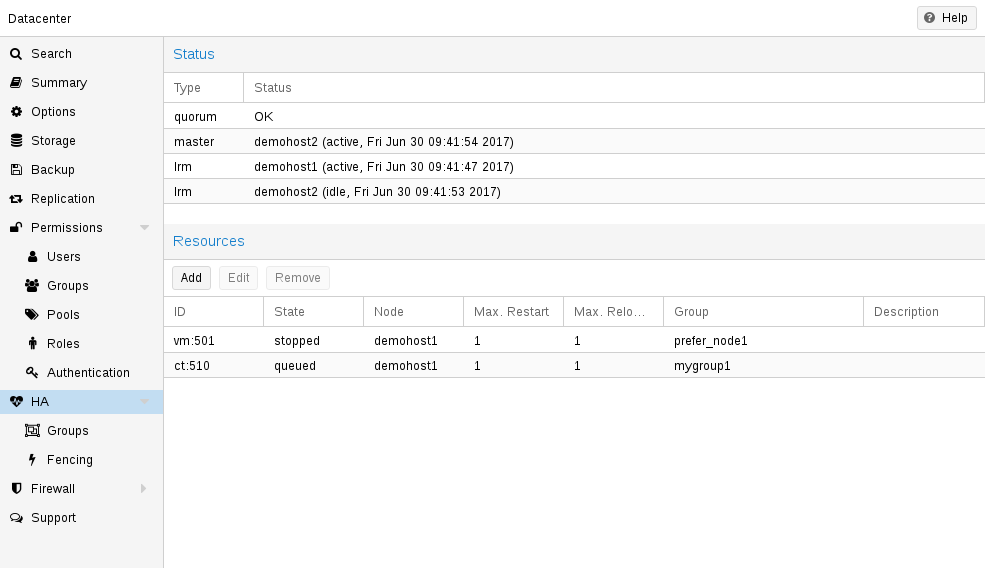
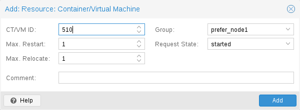
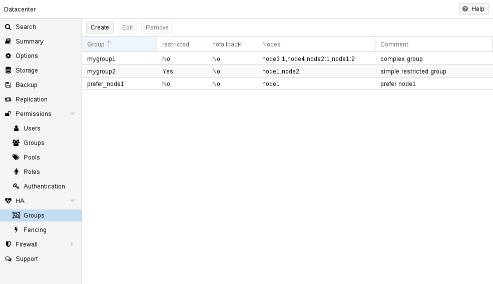
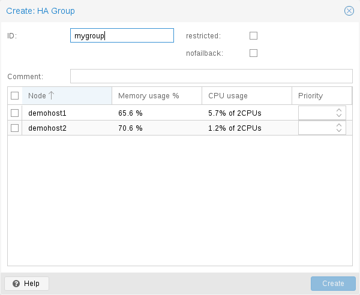

The HA stack is well integrated into the Proxmox VE API. So, for example,
HA can be configured via the ha-manager command-line interface, or
the Proxmox VE web interface - both interfaces provide an easy way to
manage HA. Automation tools can use the API directly.
All HA configuration files are within /etc/pve/ha/, so they get
automatically distributed to the cluster nodes, and all nodes share
the same HA configuration.

The resource configuration file /etc/pve/ha/resources.cfg stores
the list of resources managed by ha-manager. A resource configuration
inside that list looks like this:
<type>: <name>
<property> <value>
...It starts with a resource type followed by a resource specific name,
separated with colon. Together this forms the HA resource ID, which is
used by all ha-manager commands to uniquely identify a resource
(example: vm:100 or ct:101). The next lines contain additional
properties:
comment: <string>
failback: <boolean> (default = 1)
group: <string>
max_relocate: <integer> (0 - N) (default = 1)
max_restart: <integer> (0 - N) (default = 1)
state: <disabled | enabled | ignored | started | stopped> (default = started)
Requested resource state. The CRM reads this state and acts accordingly.
Please note that enabled is just an alias for started.
started
started after successful start. On node failures, or when start
fails, it tries to recover the resource. If everything fails, service
state it set to error.stopped
stopped state, but it
still tries to relocate the resources on node failures.disabled
stopped state, but does not try
to relocate the resources on node failures. The main purpose of this
state is error recovery, because it is the only way to move a resource out
of the error state.ignored
Here is a real world example with one VM and one container. As you see, the syntax of those files is really simple, so it is even possible to read or edit those files using your favorite editor:
Configuration Example (/etc/pve/ha/resources.cfg).
vm: 501
state started
max_relocate 2
ct: 102
# Note: use default settings for everything

The above config was generated using the ha-manager command-line tool:
# ha-manager add vm:501 --state started --max_relocate 2 # ha-manager add ct:102
HA Groups are deprecated and migrated to HA Node Affinity rules since Proxmox VE 9.0.

The HA group configuration file /etc/pve/ha/groups.cfg is used to
define groups of cluster nodes. A resource can be restricted to run
only on the members of such group. A group configuration look like
this:
group: <group>
nodes <node_list>
<property> <value>
...comment: <string>
nodes: <node>[:<pri>]{,<node>[:<pri>]}*
nofailback: <boolean> (default = 0)
restricted: <boolean> (default = 0)

A common requirement is that a resource should run on a specific node. Usually the resource is able to run on other nodes, so you can define an unrestricted group with a single member:
# ha-manager groupadd prefer_node1 --nodes node1
For bigger clusters, it makes sense to define a more detailed failover
behavior. For example, you may want to run a set of services on
node1 if possible. If node1 is not available, you want to run them
equally split on node2 and node3. If those nodes also fail, the
services should run on node4. To achieve this you could set the node
list to:
# ha-manager groupadd mygroup1 -nodes "node1:2,node2:1,node3:1,node4"
Another use case is if a resource uses other resources only available
on specific nodes, lets say node1 and node2. We need to make sure
that HA manager does not use other nodes, so we need to create a
restricted group with said nodes:
# ha-manager groupadd mygroup2 -nodes "node1,node2" -restricted
The above commands created the following group configuration file:
Configuration Example (/etc/pve/ha/groups.cfg).
group: prefer_node1
nodes node1
group: mygroup1
nodes node2:1,node4,node1:2,node3:1
group: mygroup2
nodes node2,node1
restricted 1
The nofailback options is mostly useful to avoid unwanted resource
movements during administration tasks. For example, if you need to
migrate a service to a node which doesn’t have the highest priority in the
group, you need to tell the HA manager not to instantly move this service
back by setting the nofailback option.
Another scenario is when a service was fenced and it got recovered to
another node. The admin tries to repair the fenced node and brings it
up online again to investigate the cause of failure and check if it runs
stably again. Setting the nofailback flag prevents the recovered services from
moving straight back to the fenced node.
HA rules are used to put certain constraints on HA-managed resources, which are
defined in the HA rules configuration file /etc/pve/ha/rules.cfg.
<type>: <rule>
resources <resources_list>
<property> <value>
...comment: <string>
disable: <boolean>
resources: <type>:<name>{,<type>:<name>}*
Table 15.2. Available HA Rule Types
| HA Rule Type | Description |
|---|---|
| Places affinity from one or more HA resources to one or more nodes. |
| Places affinity between two or more HA resources. The
affinity |
By default, a HA resource is able to run on any cluster node, but a common
requirement is that a HA resource should run on a specific node. That can be
implemented by defining a HA node affinity rule to make the HA resource
vm:100 prefer the node node1:
# ha-manager rules add node-affinity ha-rule-vm100 --resources vm:100 --nodes node1
By default, node affinity rules are not strict, i.e., if there is none of the specified nodes available, the HA resource can also be moved to other nodes. If, on the other hand, a HA resource must be restricted to the specified nodes, then the node affinity rule must be set to be strict.
In the previous example, the node affinity rule can be modified to restrict the
resource vm:100 to be only on node1:
# ha-manager rules set node-affinity ha-rule-vm100 --strict 1
For bigger clusters or specific use cases, it makes sense to define a more
detailed failover behavior. For example, the resources vm:200 and ct:300
should run on node1. If node1 becomes unavailable, the resources should be
distributed on node2 and node3. If node2 and node3 are also
unavailable, the resources should run on node4.
To implement this behavior in a node affinity rule, nodes can be paired with
priorities to order the preference for nodes. If two or more nodes have the same
priority, the resources can run on any of them. For the above example, node1
gets the highest priority, node2 and node3 get the same priority, and at
last node4 gets the lowest priority, which can be omitted to default to 0:
# ha-manager rules add node-affinity priority-cascade \
--resources vm:200,ct:300 --nodes "node1:2,node2:1,node3:1,node4"The above commands create the following rules in the rules configuration file:
Node Affinity Rules Configuration Example (/etc/pve/ha/rules.cfg).
node-affinity: ha-rule-vm100
resources vm:100
nodes node1
strict 1
node-affinity: priority-cascade
resources vm:200,ct:300
nodes node1:2,node2:1,node3:1,node4
nodes: <node>[:<pri>]{,<node>[:<pri>]}*
resources: <type>:<name>{,<type>:<name>}*
strict: <boolean> (default = 0)
Describes whether the node affinity rule is strict or non-strict.
A non-strict node affinity rule makes resources prefer to be on the defined nodes. If none of the defined nodes are available, the resource may run on any other node.
A strict node affinity rule makes resources be restricted to the defined nodes. If none of the defined nodes are available, the resource will be stopped.
Another common requirement is that two or more HA resources should run on either the same node, or should be distributed on separate nodes. These are also commonly called "Affinity/Anti-Affinity constraints".
For example, suppose there is a lot of communication traffic between the HA
resources vm:100 and vm:200, for example, a web server communicating with a
database server. If those HA resources are on separate nodes, this could
potentially result in a higher latency and unnecessary network load. Resource
affinity rules with the affinity positive implement the constraint to keep
the HA resources on the same node:
# ha-manager rules add resource-affinity keep-together \
--affinity positive --resources vm:100,vm:200If there are two or more positive resource affinity rules, which have
common HA resources, then these are treated as a single positive resource
affinity rule. For example, if the HA resources vm:100 and vm:101 and the
HA resources vm:101 and vm:102 are each in a positive resource affinity
rule, then it is the same as if vm:100, vm:101 and vm:102 would have been
in a single positive resource affinity rule.
If the HA resources of a positive resource affinity rule are currently running on different nodes, the CRS will move the HA resources to the node, where most of them are running already. If there is a tie in the HA resource count, the node whose name appears first in alphabetical order is selected.
However, suppose there are computationally expensive, and/or distributed
programs running on the HA resources vm:200 and ct:300, for example,
sharded database instances. In that case, running them on the same node could
potentially result in pressure on the hardware resources of the node and will
slow down the operations of these HA resources. Resource affinity rules with
the affinity negative implement the constraint to spread the HA resources on
separate nodes:
# ha-manager rules add resource-affinity keep-separate \
--affinity negative --resources vm:200,ct:300Other than node affinity rules, resource affinity rules are strict by default, i.e., if the constraints imposed by the resource affinity rules cannot be met for a HA resource, the HA Manager will put the HA resource in recovery state in case of a failover or in error state elsewhere.
The above commands created the following rules in the rules configuration file:
Resource Affinity Rules Configuration Example (/etc/pve/ha/rules.cfg).
resource-affinity: keep-together
resources vm:100,vm:200
affinity positive
resource-affinity: keep-separate
resources vm:200,ct:300
affinity negative
If there are HA resources in a positive resource affinity rule, which are also part of a negative resource affinity rule, then all the other HA resources in the positive resource affinity rule are in negative affinity with the HA resources of these negative resource affinity rules as well.
For example, if the HA resources vm:100, vm:101, and vm:102 are in a
positive resource affinity rule, and vm:100 is in a negative resource affinity
rule with the HA resource ct:200, then vm:101 and vm:102 are each in
negative resource affinity with ct:200 as well.
Note that if there are two or more HA resources in both a positive and negative resource affinity rule, then those will be disabled as they cause a conflict: Two or more HA resources cannot be kept on the same node and separated on different nodes at the same time. For more information on these cases, see the section about rule conflicts and errors below.
If there are HA resources in a node affinity rule, which are also part of a positive resource affinity rule, then all the other HA resources in the positive resource affinity rule inherit the node affinity rule as well.
For example, if the HA resources vm:100, vm:101, and vm:102 are in a
positive resource affinity rule, and vm:102 is in a node affinity rule, which
restricts vm:102 to be only on node3, then vm:100 and vm:101 are
restricted to be only on node3 as well.
Please note that if there are two or more HA resources in a positive resource affinity rule and in different node affinity rules, then those rules will cause an error and will be disabled as this is currently not supported. For more information on these cases, see the section about rule conflicts and errors below.
affinity: <negative | positive>
resources: <type>:<name>{,<type>:<name>}*
HA rules can impose rather complex constraints on the HA resources. To ensure that a new or modified HA rule does not introduce uncertainty into the HA stack’s CRS scheduler, HA rules are tested for feasibility before these are applied. For any rules that fail these tests, these rules are disabled until the conflicts and errors have been resolved.
Currently, HA rules are checked for the following feasibility tests: